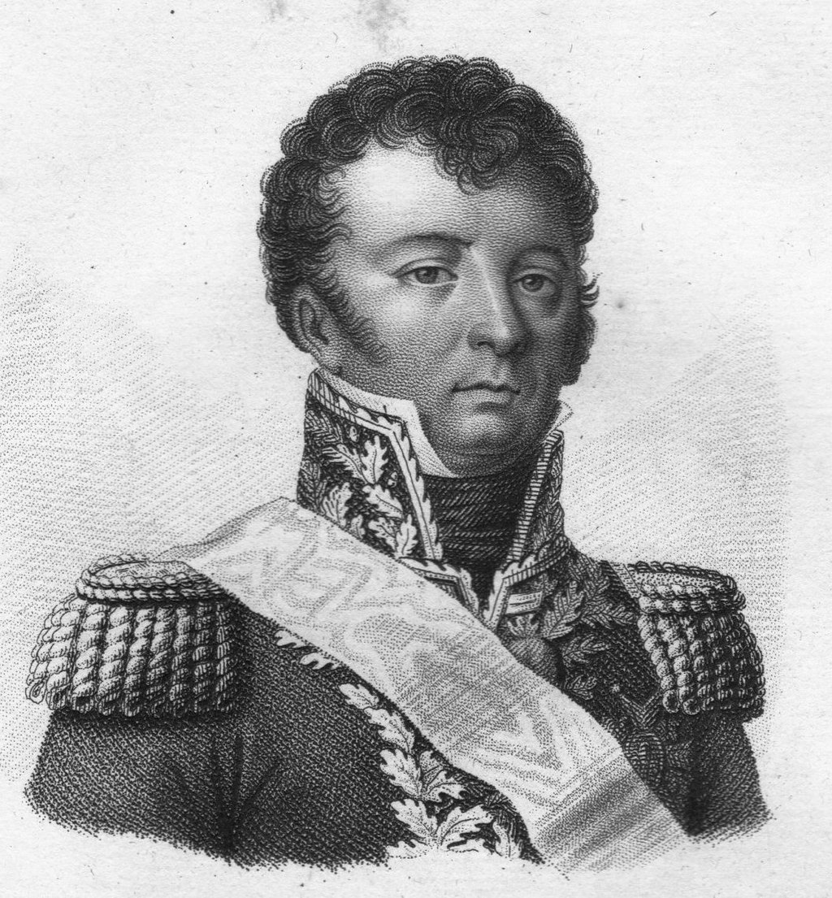
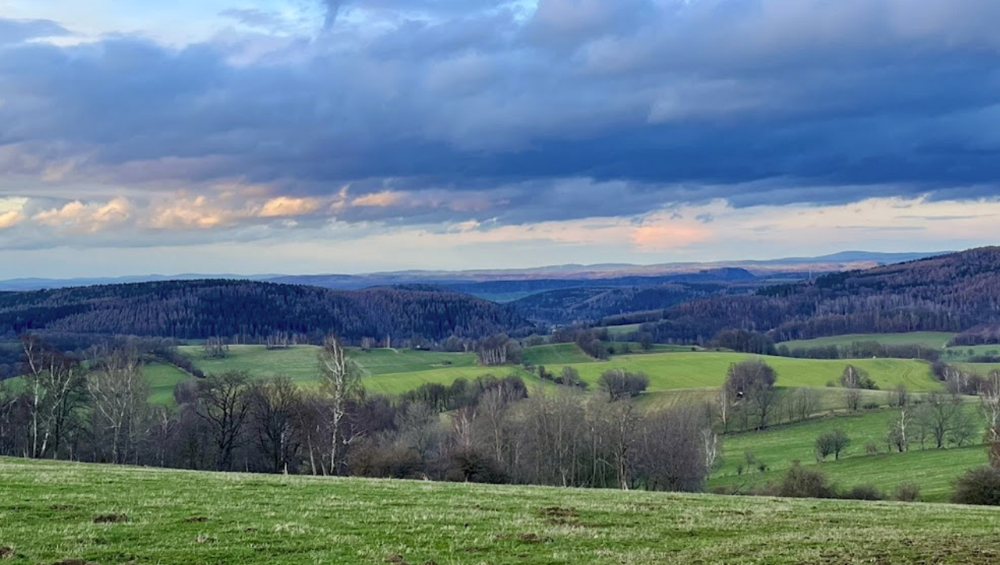
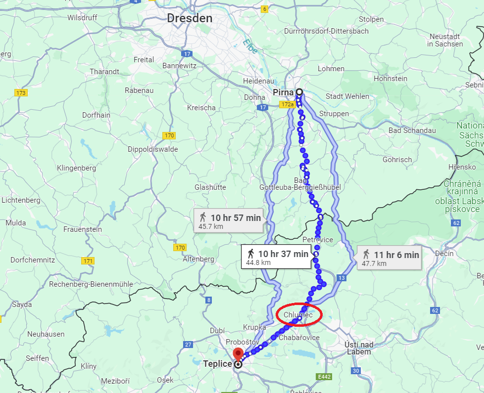
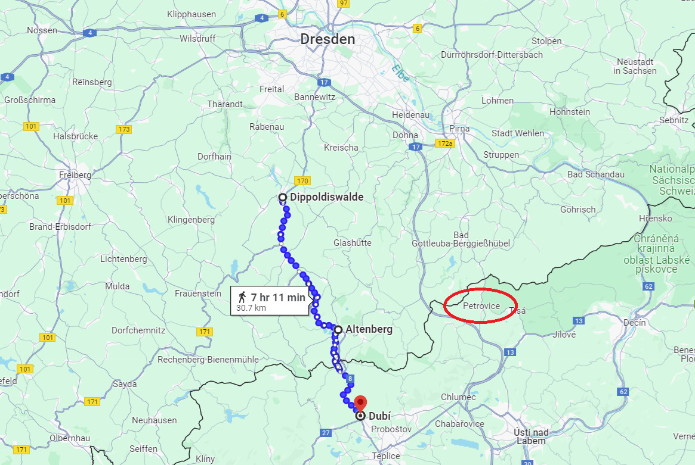
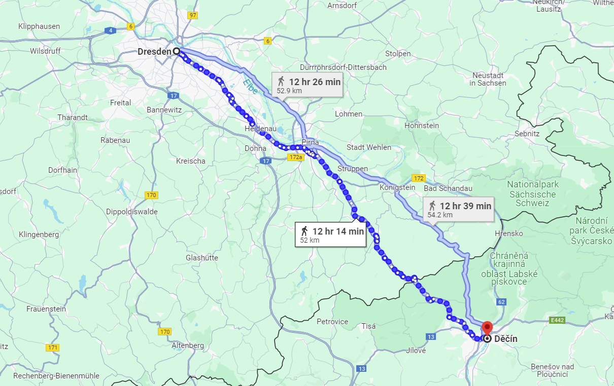
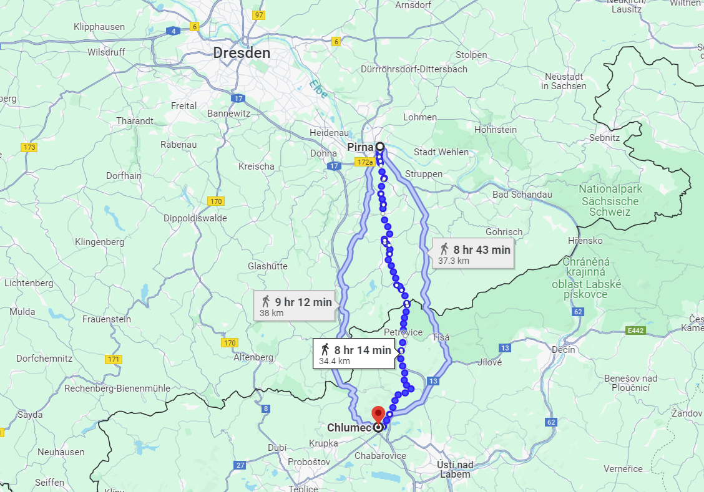

쿨름 전투 (1) - 쉬운 듯 어려운 듯 애매한 임무
게시: 2024-05-06T06:30:57+09:00
(** 오후에 새로운 source를 읽은 것이 있어서 오늘 아침에 발행된 일부 내용을 저녁에 수정했습니다. 양해 부탁드립니다.)
드레스덴 전투 첫날인 8월 26일, 나폴레옹의 명령에 따라 엘베강 상류의 피르나에서 뷔르템베르크 공작 오이겐을 쫓아내고 피르나를 점령한 방담에게 주어진 역할은 분명했습니다. 나폴레옹이 드레스덴에서 보헤미아 방면군을 격파하면, 당연히 보헤미아로 퇴각할 연합군의 퇴로를 끊으라는 것이었습니다. 싸움에 지고 도망치는 적군의 퇴로를 막는 것은 어떻게 보면 쉬운 임무처럼 보입니다. 그러나 실제로 그랬을까요? 일단 그 임무 자체는 나폴레옹이 방담의 제1군단에 더해 5만의 근위대와 함께 자신이 직접 맡으려고 했던 것입니다. 그만큼 중요한 일이라는 뜻도 되지만, 동시에 방담의 제1군단 혼자서 맡기에는 버거운 임무라는 뜻도 됩니다. 아무리 패전하여 사기가 꺾인 군대라고 해도, 보헤미아 방면군은 아직 15만이 넘는 대군이었습니다. 15만 vs. 3만5천은 누가 뭐래도 공평한 싸움이 아니었습니다. 그럼에도 불구하고 나폴레옹이 방담에게 그렇게 퇴로 차단 임무를 취소시키고 그냥 보헤미아 방면군의 후방을 공격하는데 투입하지 않은 것은 나름대로의 계산이 있었기 때문이었습니다.

(포악한 성질로 악명 높았던 방담(Dominique-Joseph René Vandamme)입니다. 나폴레옹보다 1살 어렸던 그는 벨기에와 거의 맞닿은 작은 마을인 카셀(Cassel)의 평민 가족 출신이었는데, 그의 가족이 보기에도 방담의 성격은 워낙 개차반이라 군대로 보내버리는 것이 낫겠다고 생각했던 것 같습니다. 그가 18살이 되던 해에, 그의 가족은 그를 제4 식민지 보조 대대에 입대시켜버렸고, 덕분에 그는 다음 해인 1789년에 황열병으로 죽기 딱 좋은 카리브해의 프랑스 식민지 마르티니끄 섬으로 파병됩니다. 그는 군대 생활이 적성에 맞았는지 불과 1년 만에 부사관 계급으로 승진합니다. 그러나 열악한 카리브해의 식민지 생활을 좋아할 사람은 없었고, 마침 발발한 프랑스 혁명 덕분에 혼란스러워진 식민지 상황을 틈타서 그는 바로 다음 해인 1790년 탈영하여 프랑스로 되돌아옵니다. 바록 부사관 계급은 탈영으로 날려먹었지만 혁명군에 가담한 그는 타고난 용기와 군에서 쌓은 경험을 이용하여 빠른 승진을 거듭했고, 불과 2년 후에 대위 계급을 따냅니다. 하지만 그는 이미 그런 초급 장교 시절부터도 약탈 행위로 악명 높았을 뿐만 아니라 상관과도 자주 충돌하여, 나폴레옹의 정적이자 드레스덴 전투에서 전사한 모로 장군에게도 대들다가 좌천되기도 했습니다. 다만 그 점 때문에 나폴레옹에게는 중용되었고, 1805년 아우스테를리츠 전투에서 프라첸 고지를 점령한 2개 사단 중 하나를 그가 지휘했었습니다.) 먼저, 피르나를 점령하여 보헤미아 방면군의 뒤통수를 건드리는 것은 드레스덴 전투에서 유리하면 유리했지 결코 불리한 전개가 아니었습니다. 실제로 이틀간의 드레스덴 전투가 비록 불리하게 돌아갔지만 보헤미아 방면군에게는 여전히 수적 우위가 충분했습니다. 그럼에도 불구하고 슈바르첸베르크가 줄행랑을 친 것은 후방 퇴로가 차단될 것을 염려한 것이 컸고, 이는 분명히 방담이 제 역할을 해낸 것이었습니다. 또 방담에게 비록 3만5천짜리 군단 하나만 있더라도, 15만 대군의 퇴로를 끊는 것이 아예 불가능한 것은 아니었습니다. 생각해보면 나폴레옹이 드레스덴을 거의 텅 비워두고 슐레지엔의 블뤼허를 공격하러 갔던 이유가 얼츠거비어거(Erzgebirge, 광석 산맥)라는 길고 험한 산맥 덕분에 보헤이마로부터 드레스덴으로 공격하러 올 경로가 몇 군데 되지 않을 것이라고 나폴레옹이 판단했기 때문이었습니다. 그리고 슈바르첸베르크가 빈집털이에 거의 성공할 뻔 했던 것은 나폴레옹이 잘 알지 못했던 페터스발트(Peterswald)라는 고갯길을 통해 그 산맥을 넘었기 때문이었고요. 역으로 생각하면 방담이 그 페터스발트 고갯길만 틀어막으면 보헤미아 방면군 15만은 뒤에서 추격해오는 나폴레옹과 앞을 가로 막은 방담 사이의 좁은 계곡에서 독 안에 든 쥐 신세가 될 수도 있다는 뜻이었습니다.

(구글에서 찾은 페터스발트, 즉 페트로비처(Petrovice) 일대의 풍경입니다. 당시 방담이 넘은 고갯길이 꼭 여기는 아니겠습니다만, 삼국지나 수호지 같은 이야기에서 흔히 나오는 한 명이서 1천 명을 막아낼 수 있는 험하고 좁은 고갯길은 아닌 듯 합니다.) 그러면 여기서 의문이 하나 들 수 있습니다. 만약 페터스발트 고갯길을 틀어막는 것이 방담의 주임무라면, 거기서 북쪽으로 20km 이상 떨어진 피르나는 너무 먼 지점 아닌가요? 그러니까 나폴레옹은 방담에게 피르나가 아니라 훨씬 더 남쪽에서 자신의 존재를 적군에게 드러냈어야 하는 것 아니었을까요? 결과적으로는 그게 더 맞는 방법이었을 것 같습니다만, 그게 또 그렇게 간단한 이야기만은 아니었습니다. 일단, 원래 나폴레옹은 25일 새벽까지만 하더라도 드레스덴에 입성하는 것이 아니라 방담과 합류하여 피르나를 공격하려고 했었습니다. 그러다 그로스베런의 패전 소식과 함께 드레스덴의 방어 태세가 불안하다는 전갈을 듣고 나서 막판에 자신만 드레스덴으로 방향을 바꾼 것이었습니다. 그러니까 방담도 이미 피르나 인근까지 도착한 상태였다는 이야기지요. 그런 급박한 상황에서 방담에게 피르나 말고 엘베강을 건널 다른 곳을 상류 방향에서 찾아 도강한 뒤 페터스발트를 봉쇄하라고 명령을 던지는 것은 옳은 일은 아니었을 것 같습니다. 무엇보다, 당장 드레스덴에서 전투의 결과가 어떻게 나올지 모르는 상황에서 3만5천의 적지 않은 병력을 저 먼 남쪽으로 보내는 것은 무모한 일이었습니다. 게다가 위에서 언급한 것처럼, 보헤미아 방면군 뒤통수에서 가까운 피르나에서 방담이 나타나야 슈바르첸베르크가 부담을 느낄 것이었습니다. 이런저런 이유로 인해 나폴레옹으로서는 방담에게 8월 26일 피르나에서 도강하여 보헤미아 방면군의 후방을 노리라고 지시하는 것이 최선이었습니다. 문제는 그 다음이었습니다. 드레스덴 남쪽의 평원 지대에서 1개 군단에 불과한 방담의 병력이 보헤미아 방면군의 퇴로를 끊는 것은 물리적으로 불가능했습니다. 일단 퇴각로가 한두 개가 아니었습니다. 가령 드레스덴에서의 패전 이후, 오스트리아군은 약간 남서쪽인 디폴디스발더(Dippoldiswalde) 계곡을 통해 퇴각했고, 러시아군과 프로이센군은 텔니츠(Telnitz) 대로를 따라 퇴각했으며, 너무 늦게 도착하여 전투에 아예 참전을 못했던 클레나우(Klenau)의 오스트리아 제4군단은 아예 빙 돌아 서쪽의 프라이베르크(Freiberg) 방향으로 퇴각했습니다. 이렇게 뿔뿔히 다른 방향으로 퇴각한 것은 원래 대군이 일제히 후퇴하려면 어쩔 수가 없는 일이었습니다. 15만 대군이 길 하나를 따라 퇴각하다가는 엄청난 교통 혼잡에 막혀 버릴 테니까요. 슈바르첸베르크는 후퇴하는 휘하 부대들에게 '각자 경로를 달리 후퇴하되 집결지는 보헤미아의 테플리츠(Teplitz, 체코어로는 Teplice 테플리처)라고 명시했습니다. 이렇게 각자 다른 방향으로 퇴각했는데도 이들은 27일 쏟아진 폭우에 곳곳이 진흙탕이 된 도로 때문에 많은 마차와 말을 잃어야 했습니다. 이때 얼마나 많은 마차와 말을 잃었는지, 보헤미아 방면군이 나중에 다시 북진하려 할 때 수송수단이 부족하여 진격이 거의 불가능하다고 할 정도였습니다. 어쨌거나 얼츠거비어거 산맥에 도달하기 전까지의 드레스덴 남쪽 지대는 그냥 평원지대였기 때문에 보헤미아 방면군은 얼마든지 분산 퇴각이 가능했고, 방담이 이 모든 길을 다 틀어막을 수는 없었습니다.

(슈바르첸베르크가 지정한 집결 장소는 얼츠비어거 산맥 너머 보헤미아 내의 테플리츠였습니다. 여기까지 가는 길은 꼭 하나가 아니었습니다. 러시아군과 프로이센군은 페터스발트를 넘었지만 오스트리아군은 다른 길을 택했습니다. 저 길 중간에 클루메츠(Chlumec)라는 지명이 보입니다. 클루메츠의 독일식 이름은 쿨름(Kulm)입니다.)

(오스트리아군의 대부분은 저렇게 디폴디스발더 계곡을 통해 알텐베르크, 그리고 보헤미아의 두비를 거친 뒤 테플리츠를 향했습니다. 이렇게 여러 갈래의 길로 퇴각한 것은 대군이 한꺼번에 퇴각하기 위해서는 어쩔 수 없는 선택이었습니다. 결국 얼츠비어거 산맥에는 사람과 짐마차가 어떻게든 통과할 수 있는 길이 여럿 있었던 것입니다.)
이런 상황에서 나폴레옹이 방담에게 전달한 명령은 어느 정도로 명확했을까요? 그게... 아주 명확하지는 않았습니다. 나폴레옹이 28일 오후에 방담에게 전달한 명령의 내용을 요약하면, 아래와 같았습니다.
1) 피르나는 저녁때까지 거기에 도착할 모르티에 원수의 부대가 지킬 것이니 방담은 전체 병력을 이끌고 페터스발트로 향하라.
2) 방담의 임무는 당장 대치하고 있는 뷔르템베르크 대공의 병력을 밀어붙이며 보헤미아로 뚫고 들어가는 것이다.
3) 적군보다 먼저 텟쉔(Tetschen, 현재의 Děčín 뎃쉰), 아우시크(Aussig), 테플리츠(Teplitz) 등과의 통로에 먼저 도착하여 그 후방의 수송대를 노획하라
4) 피르나에서 엘베강을 건널 때 썼던 부교는 텟쉔에 놓을 수 있도록 해체하라.

(텟쉔의 위치는 테플리츠의 훨씬 동쪽, 엘베강 상류입니다. 나폴레옹은 이제 페터스발트의 산길로 들어가야 했던 방담에게 저런 불필요한 정보까지 시시콜콜 알려주면서도 정작 페터스발트에서 최종적으로 뭘 어쩌라는 것인지는 명확히 알려주지 않았습니다.)
이렇게 모호한 명령서가 실은 이례적인 것도 아니었습니다. 통신 기술이 그다지 발전하지 않았던 시절, 나폴레옹은 세부적인 많은 것을 현장 지휘관에게 일임하는 편이었기 때문이었습니다. 그래도 적보다 먼저 달려가 페터스발트에서 적의 수송대를 나포하라는 것은 너무 모호한 것이었습니다. 저 적의 수송대라는 것이 뭘 의미하는 것이었을까요? 설마 드레스덴에서 후퇴하는 적 주력부대의 수송대를 뜻하는 것은 아니었을 것이고, 후퇴하는 뷔르템베르크 대공 부대 뒤쪽을 따라가는 수송대를 뜻하는 것이었을 것 같은데, 그래도 다소 뜬금없는 주문이었습니다. 무엇보다, 뷔르템베르크의 부대와 대치 중이라는 것을 나폴레옹이 알고 있었으니 궁극적으로 뷔르템베르크를 추격하여 보헤미아 내부로 진격하라든가 아니면 페터스발트 고갯길에 차단 진지를 구축하라든가 뭔가 분명히 명령을 내렸어야 할 것 같았는데, 아무튼 나폴레옹은 하지 않았습니다. 어쨌거나 방담도 오로지 자신의 능력으로 군단장이 된 인물이었습니다. 그도 자신의 할 바를 잘 알고 있었을 것입니다. 하지만 자신의 할 바를 아는 장군이 프랑스군에만 있었던 것은 아니었습니다. 러시아군에는 귀족의 아들로 태어났을 뿐 무능하고 게으른 인간들이 장군이랍시고 거들먹거리는 사람도 많았지만, 나름 똑똑하고 유능한 사람들도 꽤 있었습니다. 드레스덴 전투가 한창이던 27일, 남쪽 피르나에 방담이 나타났다는 급보를 듣고 보헤미아 방면군에서 급파했던 오스테르만-톨스토이 장군도 바로 그런 유능한 인물 중 하나였습니다. 그의 유능함에 대해서는 이견이 꽤 있습니다. 일부에서는 오스테르만의 능력은 결코 사단장급을 넘지 않는 수준이며, 특히 전투의 열기 속에서 쉽게 흥분하는 편이라는 평가가 있습니다. 그러나 모두가 인정하는 부분은 오스테르만은 매우 용감한 군인이라는 것이었습니다. 톨스토이는 드레스덴 남쪽에 나타난 방담이 페터스발트 고갯길을 선점할 경우 벌어질 일을 즉각 파악했습니다. 톨스토이는 즉각 페터스발트를 향해 내달렸고, 방담도 그 뒤를 쫓았습니다.

(피르나에서 쿨름, 즉 클루메츠(Chlumec)까지는 34km, 그러니까 평지에서 대로를 따라 걸을 경우 하루 정도면 돌파할 수 있는 거리입니다만, 도로 사정이 열악하고 산악지대인 경우 이틀 정도 걸리는 거리입니다.) Source : The Life of Napoleon Bonaparte, by William Milligan Sloane Napoleon and the Struggle for Germany, by Leggiere, Michael V With Napoleon's Guns by Colonel Jean-Nicolas-Auguste Noël https://www.pinterest.co.uk/pin/143059725653536439/ https://napoleon-monuments.eu/Napoleon1er/Vandamme.htm https://alchetron.com/Battle-of-Kulm http://napoleonistyka.atspace.com/BATTLE_OF_DRESDEN.htm https://en.wikipedia.org/wiki/Battle_of_Kulm https://en.wikipedia.org/wiki/Teplice https://en.wikipedia.org/wiki/Dominique_Vandamme https://www.frenchempire.net/biographies/vandamme/ https://battlefieldanomalies.com/napoleonic-wars/the-battle-of-kulm/